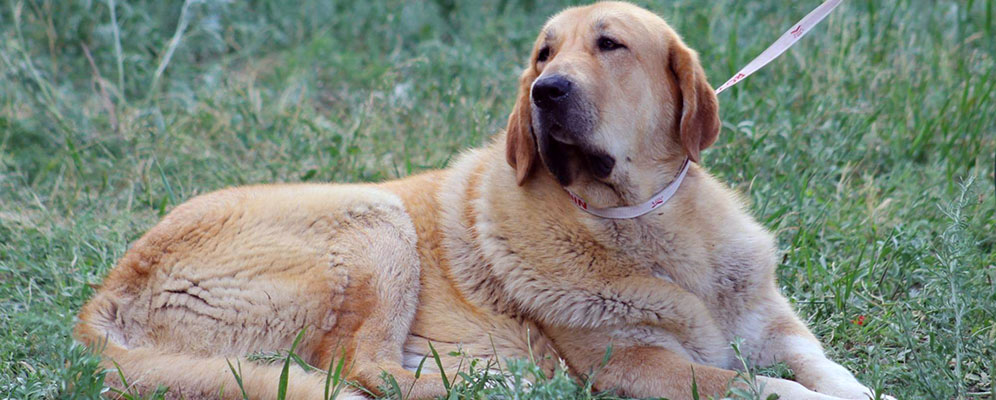
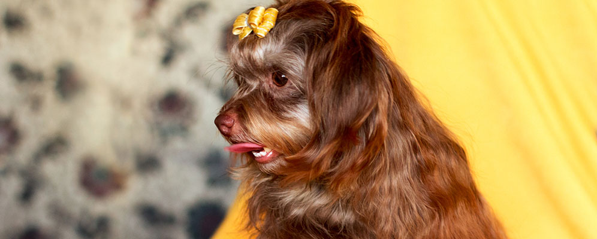
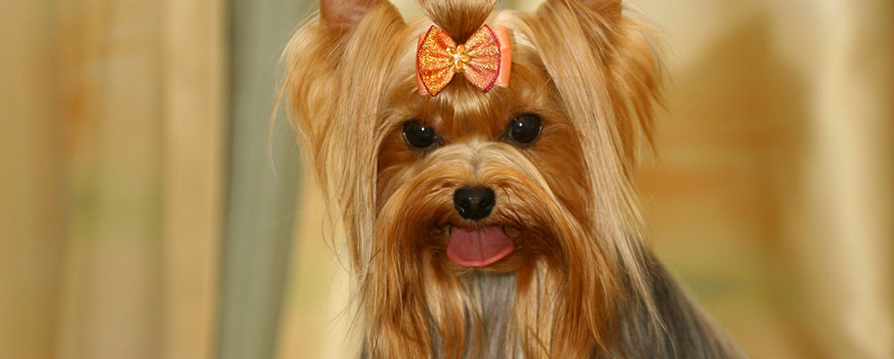
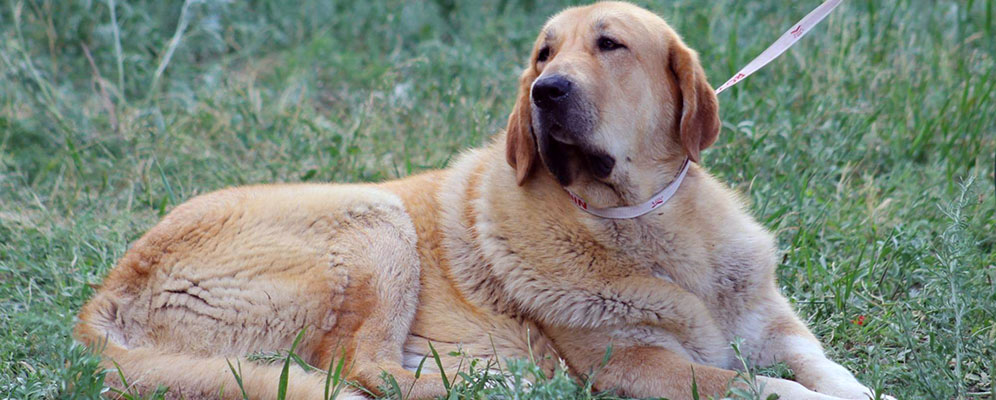
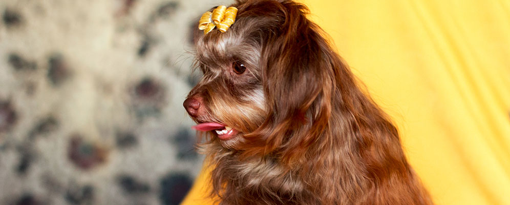
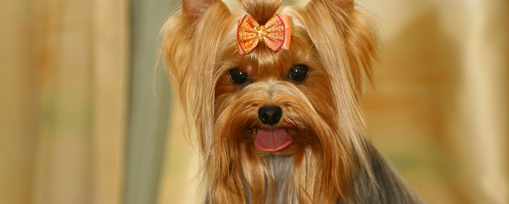
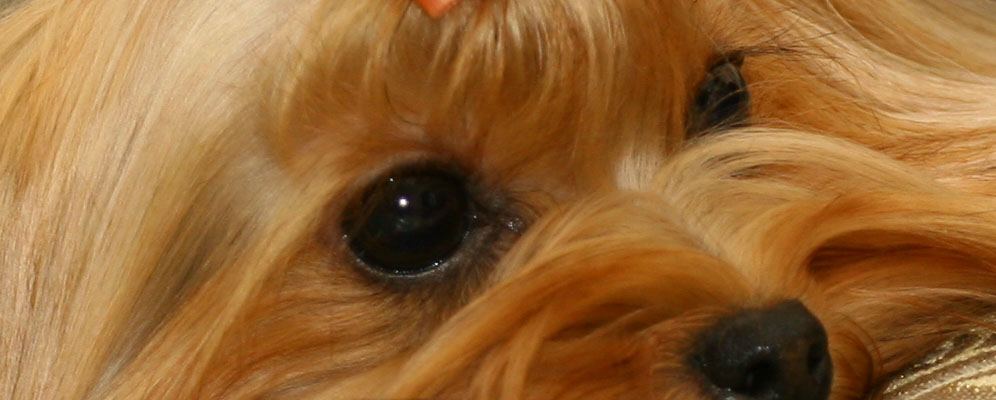
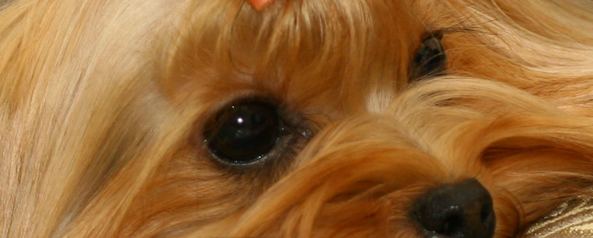

 


Всё началось задолго до основания питомника…
1982 год ознаменовался для меня появлением первой в моей жизни собаки – эрдельтерьера по кличке Эжен. Дальше были дрессировочные площадки, выставки… всё это увлекло меня, и я и не заметила, как кинология стала частью моей жизни.
Увиденные в середине 90-х на международной выставке маленькие терьеры покорили меня своей красотой. И в 1997 году к нам приехали первые в Черноземье йоркширский и вест-хайленд-вайт терьеры, будущие чемпионы, - Биттина и Happy White Jumping B. Они и их звёздные потомки и составили базу питомника.
Благодаря грамотной племенной работе с производителями из известнейших питомников Франции, Англии, США был создан и преумножен тот неповторимый образ собак, который Вы можете видеть сегодня. За 20 лет работы получено более 300 щенков, представляющих питомник в России, США, Германии, Прибалтике, а также более 50 титулов «Чемпион».
В настоящее время в питомнике три профилирующие породы, о которых мне хотелось бы рассказать подробнее: вест-хайленд-вайт терьер, йоркширский терьер, испанский мастиф.
Поздравляю состоявшихся Чемпионов, их владельцев и желаю удачи нашим новым друзьям и их питомцам – будущим покорителям рингов! Всё получится! Мы – вместе! А вместе мы – сила!
С уважением, Лилия Пастухова.
Питомник «Из Пастушьей сумки», г. Воронеж.